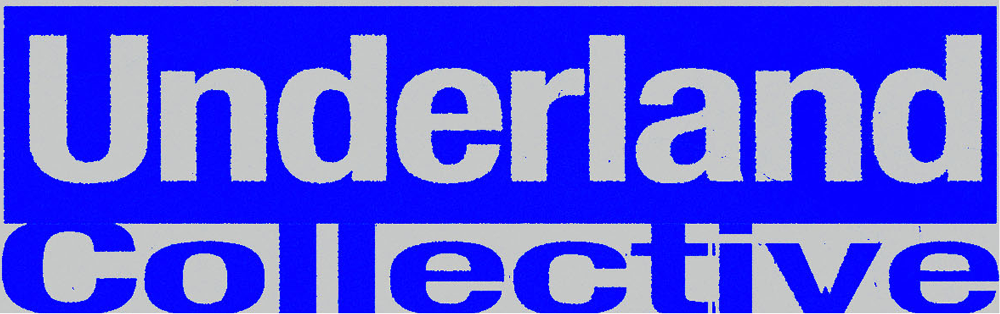
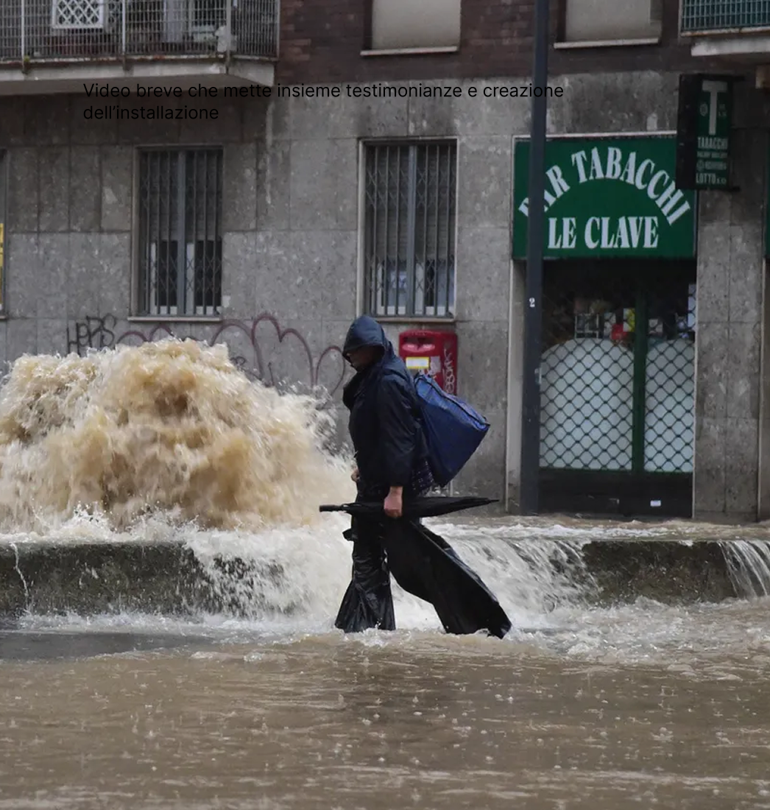
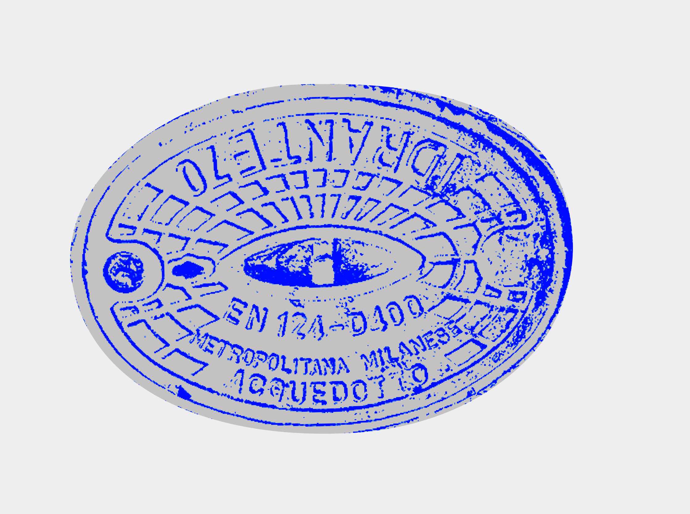
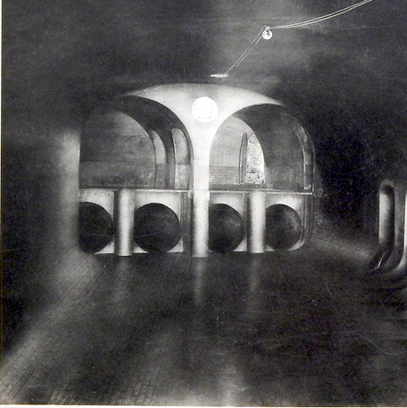
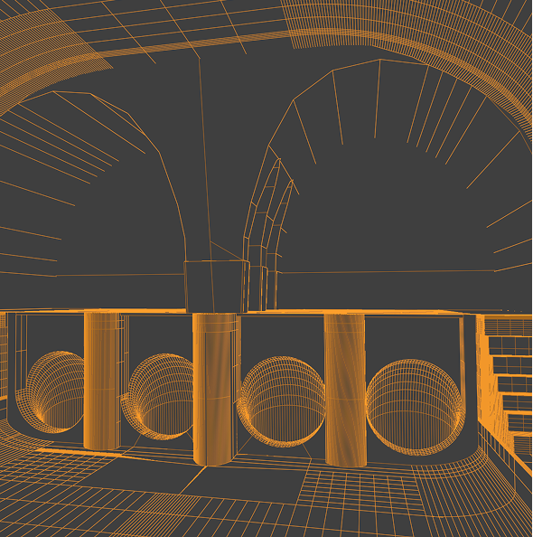
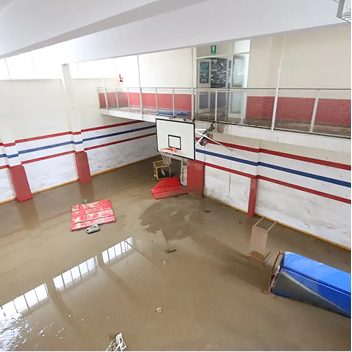
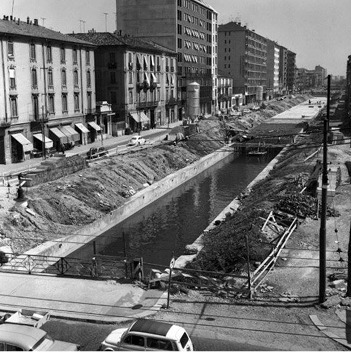
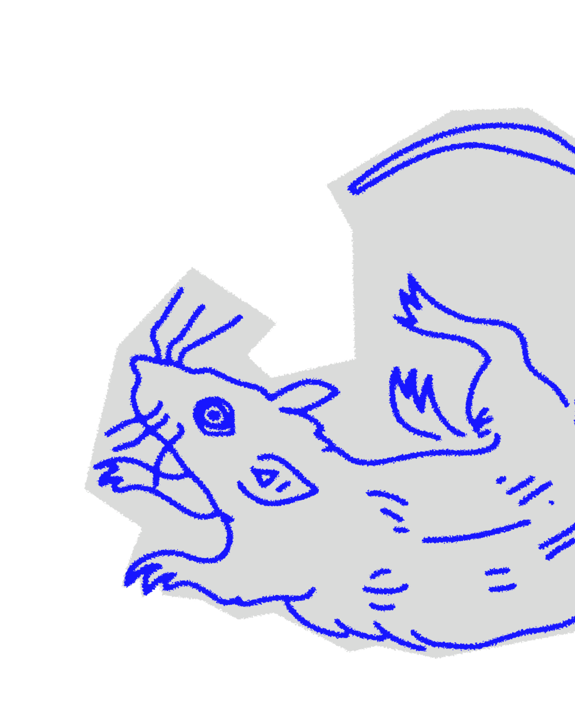

Underland trasforma informazioni invisibili in esperienza diretta, riportando l'acqua al centro come elemento storico, politico ed ecologico.
La fiction diventa così uno strumento di progetto: una lente critica per leggere il presente e riconoscere le fragilità che continueranno a manifestarsi finché resteranno sepolte.
